| 4.2.1.1.2 表单 |
1. 系统的登陆
双击桌面上的图标IE浏览器，在地址栏里输入网址名称，名称为http://soa.yundasys.com:20088/ydsoa/cas.login?CASLOGOUT=true 打开页面后进入登录页面。
注：验证码看不清，可点击验证码更新
2.系统首页
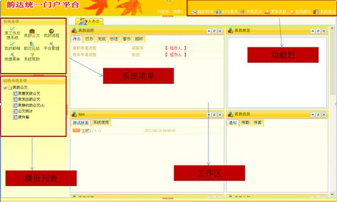
注：界面分四个区域
3.系统菜单―我的流程
在系统菜单我的流程里统一对流程进行操作：操作功能包括有【发起流程】，【查询流程】，【我发起过的流程】，【待办流程】，【已办事宜】，【工作流客户端】。
如图：
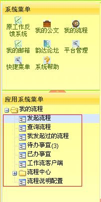
4.点击【发起流程】，会出现如下界面，然后选取――【转正流程】
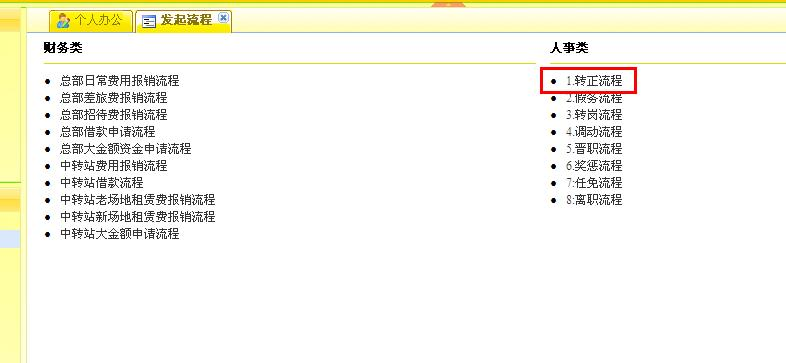
5.然后会进入标准表单界面
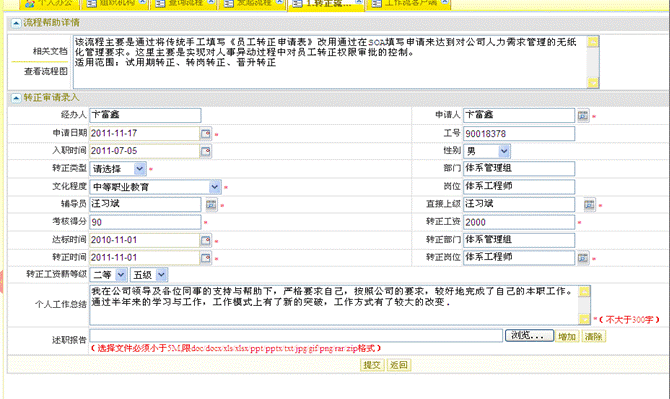
图2
6.填写转正表单的操作说明
首先看到的表单，有些个人信息系统已经填好了（图3） 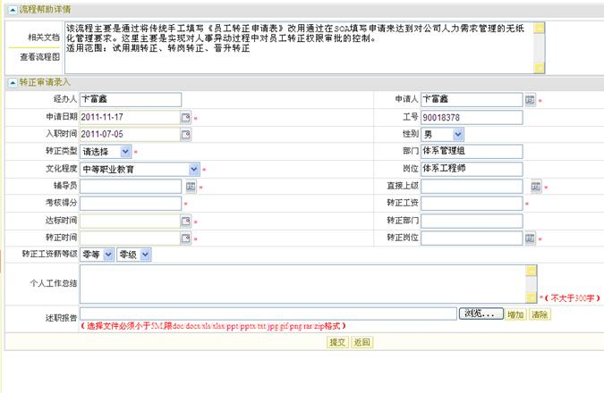
图3
注意看一下，这是张标准填写的表单 。红色字代表范围限制， *表示必填项 ， 表示选择日期 ，表示选择组织架构人员或岗位。
（2）填写步骤
1 辅导员： 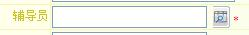
2 直接上级： 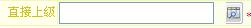
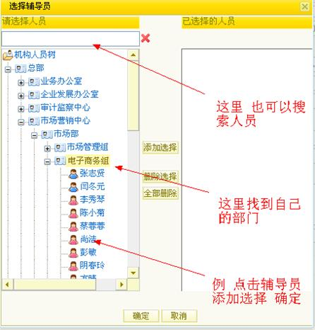 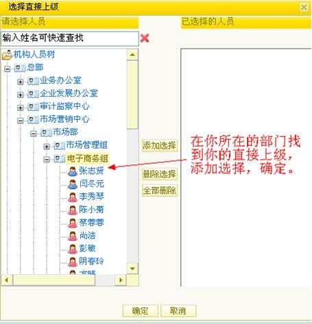
3考核得分： 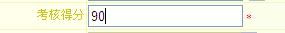
图6
4达标时间：（考察期间当月第一天），转正时间（正式转正当月第一天）如图所示:
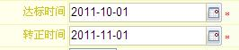 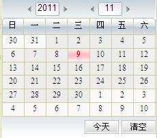
图7
5转正部门：在填转正岗位的时候，系统就会自动带出。
6 转正岗位 ： 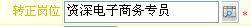 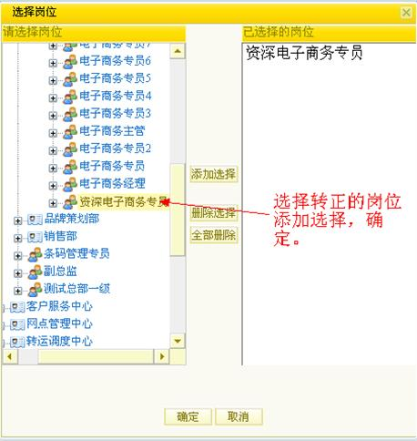
7转正工资等级：这个自己不清楚的 直接询问人事酬薪专员。 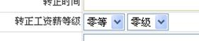
8个人工作总结：这个自己发挥填写（不超过300字）。 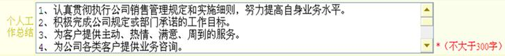
图11
9述职报告：就是说上面的工作总结不够填写，还可以增加附件。 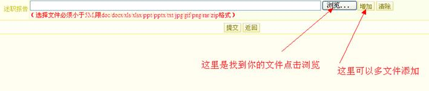
注意 选择文件必须小于5M,限doc/docx/xls/xlsx/ppt/pptx/txt/jpg/gif/png/rar/zip格式 图12
10转正类型：自己根据自己选择一下
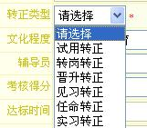
最后点击提交： 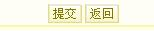
图13
7.提交成功后
（1）看到的 如图（14）所示
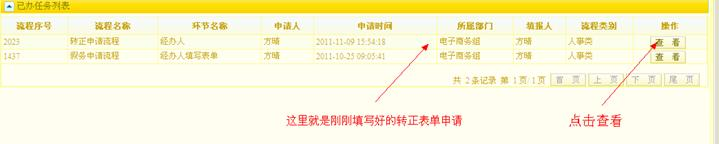
图14
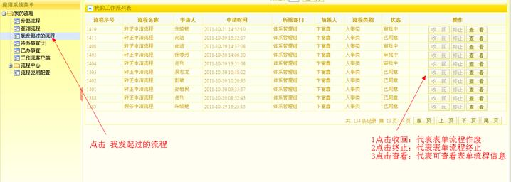
图15
（2）流程信息查看页面
1流程信息
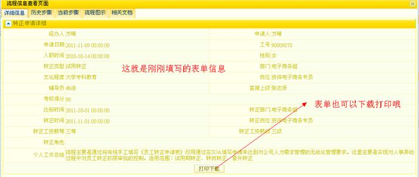
图16
2历史步骤
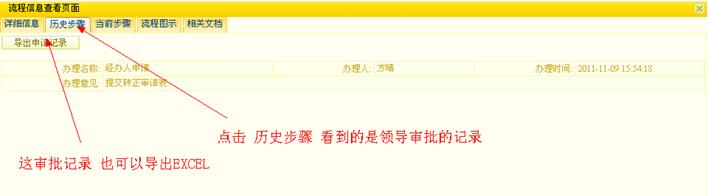
图17
3当前步骤
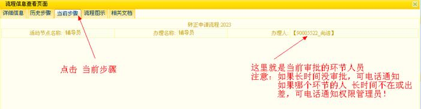
图18
图18所示 审批的人员，要注意的是 如果长时间没审批，可电话通知他进行审批如果哪个环节的人员 长时间不在或出差，可电话通知权限管理员，更改该环节人员，进行审批！
4流程图示
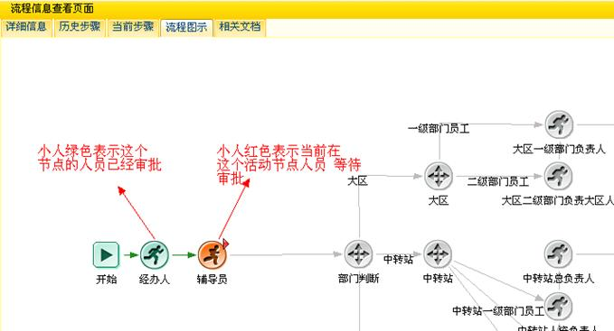
图19
5 已经审批完成的流程图
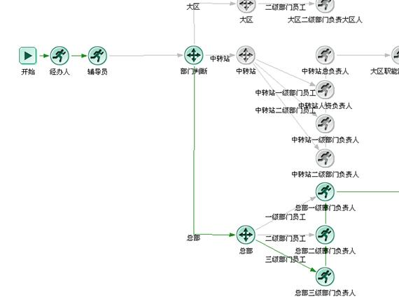 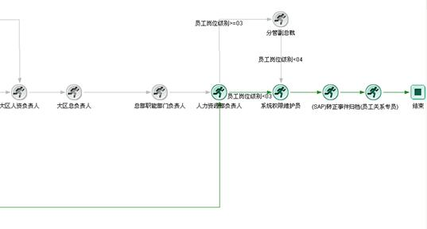
图20
图21
6当前步骤已完成
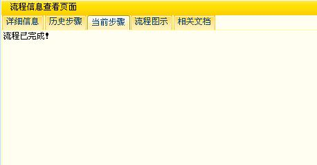
看到的图（20）图（21）图（22） 就表示转正流程审批好了
三：审批人员的 提交， 回退 。如图23,24,25 所示
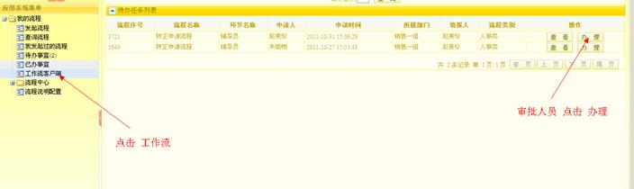
图23
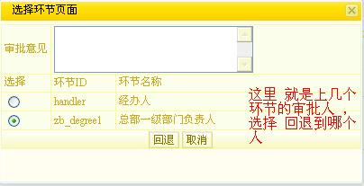 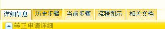
图25所示 在办理表单的时候 ，这里也可以查看流程表单的信息。